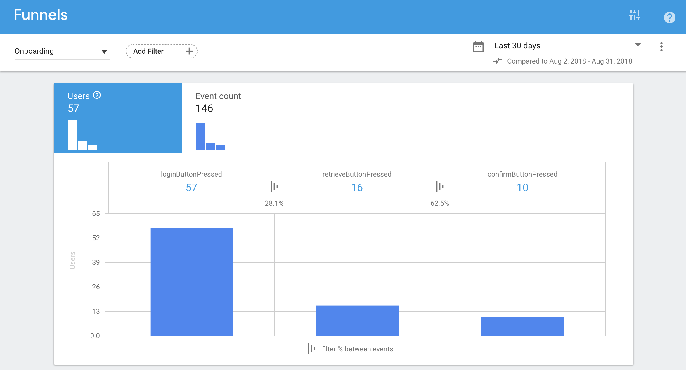

Other Projects
Masthead revamp HDB Resale Portal Meter UX Snapshots Other Projects
Parents Gateway is a web and mobile app that strengthens school-home partnership to support students in their education journey. Developed together with the Ministry of Education, the product will soon be launched with pilot schools in October.
I am the primary designer for the mobile app (react native) and assist with the design of the web app. Together with one other designer, we cover all the product design needs from research, usability testing, giving input to the product vision and roadmap to the UI and interaction design explorations and illustrations.
Additionally, with both of us being designers who enjoy coding, we often jump into the source code to set up the base patterns and naming conventions for the various front end styles. (+ fixing minor styles along the way 😅)
Sketch, Framer, After Effects, Overflow
Google Tag Manager, Firebase, Jira, React, React Native
Teachers in Singapore are overly bogged down by administrative matters in their day to day work. This takes away from their ability to focus on their core job – education.
Thus, the question for us was: How might we help teachers reduce their time spent on administrative work?
From there we dived into the various administrative matters a teacher has to deal with across the school year.
After a few session with various teachers, we found that sending announcements and collecting consent forms from parents was the most time-consuming activity (most frequent across the year + difficulty).
Today, teachers will distribute physical copies of a consent form or announcement to students to pass to their parents. Most forms will require a parent's signature. This leads to multiple issues including lost forms, mismatched schedules and so on, causing teachers to spend a lot of time chasing for them.
Additionally, parents, too, face mulitple issues with receiving the form from their child and returning the form on time etc.
The form is in there somewhereThus, we decided to tackle this problem space first.
Given that the teachers will be dealing with a large amount of information, we choose to first develop a web app for schools. On the other hand, given the frequent and unpredictable nature of school announcements, a mobile app for parents was the most conveninet way to receive them.
I transitioned into the product team from another and started by working closely with the product manager to understand the upcoming tickets and requirements. Over time, the app was designed incrementally through rounds of iterations.
Throughout the way, we revised and refined the overall flow, cutting away many features for a more focused product (and a more manageable first launch).

Along the way, there were some interesting design challenges we encountered:
When we were mapping out the flow of the product, retreiving the children's data based on the user's ID number sounded natural.
However, we soon had feedback that this was a problem for individuals with additional children their spouses are unaware of. As the government, it is not in our interest or intention to break families apart by revealing any possible family secrets.
Thus, we intentionally added a page to the flow, both to inform the user and add additional friction. The users can then make the call to either proceed with onboarding at a later date or move ahead.
Researching on parents in Singapore, we identified four behavioural archetypes:
The kiasu – who wants too much information.
The proactive – who will comb through everything the school sends.
The reactive – who wants sufficient information.
The disengaged – who just want to get the necessary tasks done.
We wanted to ensure that our product did not just serve parents who had the luxury of time but also the ones who are busy making a living (mostly the reason why they are disengaged). Hence, we made a point to have a to-do list as one of the main navigation items.
Throughout the process, I have learned quite a bit about designing for performance and the trade-offs between lazy-loading and paginations.
I have also started to keep a list of pointers on designing for react native covering a few components like web view, alerts, keyboard avoiding view and push notification behaviors.
On top of my design work, I took up the initiative to define success metrics for the product together with the product managers and worked with the developers on collecting the necessary data and logs. Initially, we explored using Kibana to visualise logs as a quick way to get some insight into some of the metrics.
However, we soon found that there were much more to be unearthed from the database directly, including what was being logged. We are now working on a customised dashboard using grafana and prometheus to give us an overall view of the project. This will allow us to track how far along schools are in our engagement funnel in real time (+ much more).
Plus, to track behavioural flows and funnels, I implemented firebase analytics for our react native app and google tag manager for the web app. From there, I realised that some of our developers work till 3am on a Saturday. 🙈
I am grateful to be on a product team where I am empowered as a designer to give user inputs and guide the product direction. Along the way, I have learned a lot on what it takes to work with developers. Particularly so when I hit a roadblock trying to edit something in the source code.
While I did not elaborate on the design considerations for the web app here, that is probably a whole other complexity for another day.
Additionally, I giggle slightly at being able to return to my alma-meter to help design a solution for the problems they face. It lights up my face whenever a teacher or parent tells me how much this product would help them out.
I anticipate seeing how the product will fare with future releases. (and I hope to be a satisfied user one day 😉)
Masthead revamp HDB Resale Portal Meter UX Snapshots Other Projects